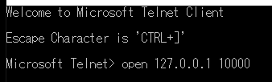
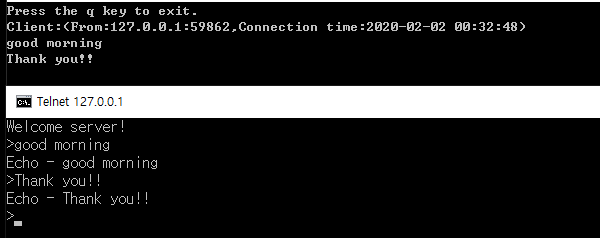
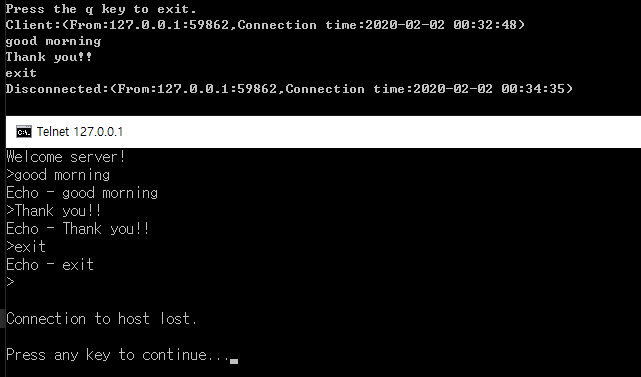
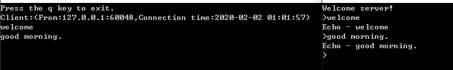

[C#] 非同期ソケット通信(IOCP)-APMパターン
こんにちは。明月です。
この投稿はC#の非同期ソケット通信(IOCP)-APMパターンに関する説明です。
以前、非同期ソケット通信(IOCP)に関して説明してその中でEAP(Event-based Asynchronous Pattern)に関して説明しました。
link - [C#] 非同期ソケット通信(IOCP)-EAPパターン
APMパターンも同じ非同期ソケット通信(IOCP)ですが、パターンが少し違うことです。
EAPの場合はイベントタイプでSocketAsyncEventArgsクラスのCompletedイベントを利用してAcceptAsyncとSendAsync、ReceiveAsyncのクライアント待機、送信、受信をしました。
このEAPの短所はすべて同じイベントで実行するので可読性がよくない問題があります。
それで.Net framework 4.0からはAsyncCallbackのデリゲートを利用してBeginAcceptやBeginSend、BeginReceiveの関数で待機、送信、受信をします。
私の考えでは4.0からはC#がLambda式にも対応することができるのでイベント方式からデリゲート方式に実装が可能になったと思います。
個人的にみるとパフォーマンスや概念は別に変わったことは無く、ソースステップがもっとシンプルになったと思います。
Windowのtelnetのプログラムを利用してデータを受け取るサーバーを作成しましょう。
using System;
using System.Text;
using System.Net;
using System.Net.Sockets;
// 実行関数は一番下にあります。
namespace AsyncSocketServer
{
// ClientクラスでClientが接続すれば生成する。
class Client
{
// メッセージは改行で区分する。
private static char CR = (char)0x0D;
private static char LF = (char)0x0A;
private Socket socket;
// メッセージを保管するバッファ
private byte[] buffer = new byte[1024];
private StringBuilder sb = new StringBuilder();
// コンストラクタ
public Client(Socket socket)
{
this.socket = socket;
// bufferでメッセージを受け取ってReceive関数でメッセージが受信するまで待機する。
this.socket.BeginReceive(buffer, 0, buffer.Length, SocketFlags.None, Receive, this);
// 接続情報取得
var remoteAddr = (IPEndPoint)socket.RemoteEndPoint;
// コンソールに接続情報を出力
Console.WriteLine($"Client:(From:{remoteAddr.Address.ToString()}:{remoteAddr.Port},Connection time:{DateTime.Now.ToString("yyyy-MM-dd HH:mm:ss")})");
// メッセージをクライアントに送信
Send("Welcome server!\r\n>");
}
// メッセージが受信すれば呼び出す。
private void Receive(IAsyncResult result)
{
// 接続が繋がっていると。。。
if (socket.Connected)
{
// EndReceiveを呼び出してデータサーズを受け取る。
// EndReceiveは待機を終わらせる。
int size = this.socket.EndReceive(result);
// データをStringタイプに変換
sb.Append(Encoding.ASCII.GetString(buffer, 0, size));
// メッセージの末にエスケープ\r\nの形でサーバーに表示する。
if (sb.Length >= 2 && sb[sb.Length - 2] == CR && sb[sb.Length - 1] == LF)
{
// 改行を除く。
sb.Length = sb.Length - 2;
// Stringタイプに変換
string msg = sb.ToString();
// コンソールに出力。
Console.WriteLine(msg);
// ClientにEchoメッセージを送信。
Send($"Echo - {msg}\r\n>");
// もし、メッセージがexitなら接続を切断する。
if ("exit".Equals(msg, StringComparison.OrdinalIgnoreCase))
{
// 接続終了メッセージ
var remoteAddr = (IPEndPoint)socket.RemoteEndPoint;
Console.WriteLine($"Disconnected:(From:{remoteAddr.Address.ToString()}:{remoteAddr.Port},Connection time:{DateTime.Now.ToString("yyyy-MM-dd HH:mm:ss")})");
// 接続を切断
this.socket.Close();
return;
}
// バッファをクリア
sb.Clear();
}
// バッファを設定してReceive関数で受信するまで待機する。
this.socket.BeginReceive(buffer, 0, buffer.Length, SocketFlags.None, Receive, this);
}
}
// Sendも非同期式で作成可能だが、あえてSendはその必要がない。
// メッセージを送信する関数。
private void Send(string msg)
{
// Stringタイプをバイナリタイプに変換
byte[] data = Encoding.ASCII.GetBytes(msg);
// 非同期式
//this.socket.BeginSend(data, 0, data.Length, SocketFlags.None, Send, this);
// Clientにメッセージ送信
socket.Send(data, data.Length, SocketFlags.None);
}
// Send非同期関数。未使用
private void Send(IAsyncResult result)
{
// 接続が繋がっていると。。。
if (socket.Connected)
{
this.socket.EndSend(result);
}
}
}
// メインProgramはSocketを継承してサーバーSocketで使う。
class Program : Socket
{
// コンストラクタ
public Program() : base(AddressFamily.InterNetwork, SocketType.Stream, ProtocolType.Tcp)
{
// ポートは10000をListenする。
base.Bind(new IPEndPoint(IPAddress.Any, 10000));
base.Listen(0);
// 非同期ソケットでAccept関数を待機する。
BeginAccept(Accept, this);
}
// クライアントが接続すると関数が呼び出す。
private void Accept(IAsyncResult result)
{
// EndAcceptで接続Client Socketを受け取る。EndAcceptは待機を終わらせる。
// Clientインスタンスを生成する。
var client = new Client(EndAccept(result));
// 非同期ソケットでAccept関数を待機する。
BeginAccept(Accept, this);
}
// プログラム開始関数
static void Main(string[] args)
{
// Programクラスを実行する。
new Program();
// qキーを押せばサーバーは終了する。
Console.WriteLine("Press the q key to exit.");
while (true)
{
string k = Console.ReadLine();
if ("q".Equals(k, StringComparison.OrdinalIgnoreCase))
{
break;
}
}
}
}
}
作成が終わったらサーバーを起動してtelnetプログラムで接続します。

IPはローカル(127.0.0.1)に設定してポートは10000です。

telnetからメッセージを送信したらサーバー側でメッセージをちゃんと受け取ってコンソールに表示します。
telnet側にはechoメッセージがちゃんと表示します。

終了まで綺麗に送受信ができます。
サーバーは作成できましたからこれからクライアントを作成します。
クライアントプログラムでもListen、AcceptとConnectの差だけです。
using System;
using System.Text;
using System.Net;
using System.Net.Sockets;
namespace AsyncSocketClient
{
// メインProgramはSocketを継承してクライアントSocketで使う。
class Program : Socket
{
// メッセージは改行で区分する。
private static char CR = (char)0x0D;
private static char LF = (char)0x0A;
// メッセージを保管するバッファ
private byte[] buffer = new byte[1024];
private StringBuilder sb = new StringBuilder();
// コンストラクタ
public Program() : base(AddressFamily.InterNetwork, SocketType.Stream, ProtocolType.Tcp)
{
// 接続する。
base.BeginConnect(new IPEndPoint(IPAddress.Parse("127.0.0.1"), 10000), Connect, this);
while (true)
{
// コンソールからメッセージを受け取るとサーバーに送信する。
string k = Console.ReadLine();
Send(k + "\r\n");
// exitなら終了する。
if ("exit".Equals(k, StringComparison.OrdinalIgnoreCase))
{
break;
}
}
}
// 接続すれば呼び出す。
private void Connect(IAsyncResult result)
{
// 接続待機を終了する。
base.EndConnect(result);
// バッファを設定してReceive関数で受信するまで待機する。
base.BeginReceive(buffer, 0, buffer.Length, SocketFlags.None, Receive, this);
}
// メッセージが受信すれば呼び出す。
private void Receive(IAsyncResult result)
{
if (Connected)
{
// EndReceiveを呼び出してデータサーズを受け取る。
// EndReceiveは待機を終わらせる。
int size = this.EndReceive(result);
// データをStringタイプに変換
sb.Append(Encoding.ASCII.GetString(buffer, 0, size));
// メッセージの末にエスケープ\r\nと>の形でコンソールに表示する。
if (sb.Length >= 3 && sb[sb.Length - 3] == CR && sb[sb.Length - 2] == LF && sb[sb.Length - 1] == '>')
{
// stringに変換する。
string msg = sb.ToString();
// メッセージをコンソールに出力
Console.Write(msg);
// バッファクリア
sb.Clear();
}
// バッファを設定してReceive関数で受信するまで待機する。
base.BeginReceive(buffer, 0, buffer.Length, SocketFlags.None, Receive, this);
}
}
// Sendも非同期式で作成可能だが、あえてSendはその必要がない。
// メッセージを送信する関数。
private void Send(string msg)
{
// Stringタイプをバイナリタイプに変換
byte[] data = Encoding.ASCII.GetBytes(msg);
// 非同期式
//this.socket.BeginSend(data, 0, data.Length, SocketFlags.None, Send, this);
// Clientにメッセージ送信
socket.Send(data, data.Length, SocketFlags.None);
}
// Send非同期関数。未使用
private void Send(IAsyncResult result)
{
// 接続が繋がっていると。。
if (base.Connected)
{
base.EndSend(result);
}
}
// プログラム開始関数
static void Main(string[] args)
{
new Program();
}
}
}
サーバーを起動してクライアントで接続しましょう。

上のtelnetで接続したことと同じ結果になりました。
参照 - https://docs.microsoft.com/en-us/dotnet/standard/asynchronous-programming-patterns/
ここまでC#の非同期ソケット通信(IOCP)-APMパターンに関する説明でした。
ご不明なところや間違いところがあればコメントしてください。
- [C#] 非同期ソケット通信(IOCP)-APMパターン2020/05/18 18:45:37
- [C#] 非同期ソケット通信(IOCP)-EAPパターン2020/05/15 19:31:02
- [C#] NPOIを利用してExcelを読み込んで出力する方法2020/05/08 10:43:52
- [C#] NPOIライブラリを利用してエクセルファイルを生成する方法2020/05/07 01:49:01
- [C#] Geckoライブラリを利用してウェブスクレイピングする方法2020/05/05 00:52:26
- [C#] PDFを作成する方法(iTextSharp)2020/05/03 10:22:40
- [C#] シリアライズ(Serialization)をする方法2020/04/30 19:32:04
- [C#] dynamicタイプの動的パラメータ-DynamicObject(WinFormでASP.MVCのViewBagオブジェクトを使用する方法)2020/04/29 22:41:32
- [C#] Stringの補間式(interpolation)2020/04/27 20:39:57
- [C#] Newtonsoft.JSONライブラリを利用してJsonデータ構造を扱う方法2020/04/23 20:19:53
- [C#] EMailを送信する方法(System.Net.Mail)2020/04/22 19:00:42
- [C#] ini環境ファイルを使う方法2020/04/22 00:09:39
- [C#] 環境設定ファイルを扱う方法(System.Configuration)2020/04/20 19:37:57
- [C#] Reflectionを利用してクラス複製する方法2020/04/17 00:34:33
- [C#] XMLをXPathを利用してデータを取得する方法2020/04/16 00:47:17
- [Python] 19. 非同期IOのasync/await(asyncio)を使う方法2020/06/22 18:10:12
- [Python] 18. ネットワーク(Socket)通信する方法2020/06/18 19:53:56
- [Python] 17. スレッド(Thread)とロック(lock)、そしてデッドロック(deadlock)2020/06/18 00:19:45
- [Python] 16. IO(ファイル読み取り、書き込み)を扱う方法2020/06/16 18:37:00
- [Python] 15. クラスを継承する方法2020/06/15 18:20:07
- [Python] 14. クラスプロパティ(Property)2020/06/12 17:45:13
- [Python] 13. クラス関数(class method)とダック・タイピング、そして特殊メソッド2020/06/11 19:42:29
- [Python] 12. クラス(Class)を使う方法2020/06/10 19:33:33
- [Python] 11. デコレーター（Decorator）を使う方法2020/06/09 17:27:18
- [Python] 10. モジュールとパッケージ(import)2020/06/08 19:07:50
- [Python] 09. 例外処理する方法2020/06/05 17:11:47
- [Python] 08. ジェネレータ(Generator)2020/06/04 18:46:08
- [Python] 07. globalとnonlocal2020/06/03 20:34:49
- [Python] 06. 関数(function) - インライン関数、callbak、ラムダ(lambda)そしてクロージャ2020/06/02 20:51:22
- [Python] 05. コンプリヘンション(Comprehension)を使用する方法2020/06/01 19:38:58